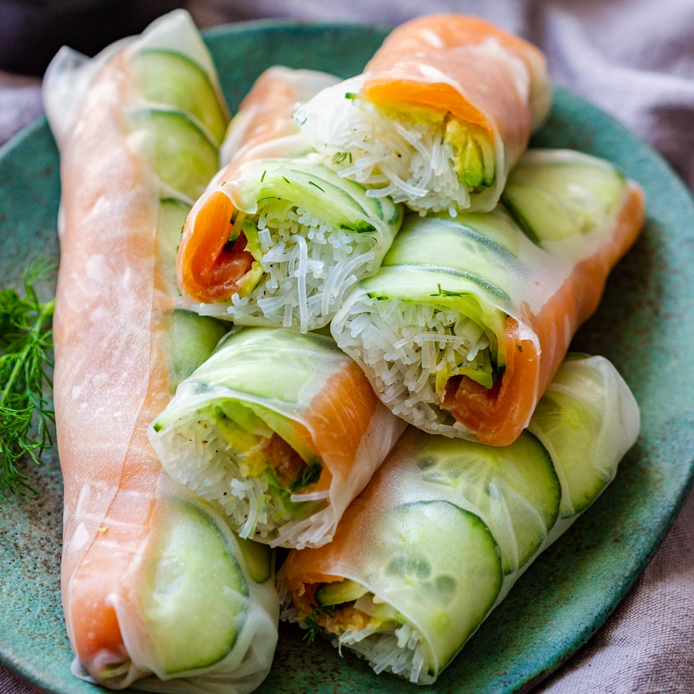

Rice paper rolls with salmon, avocado and glass noodles

Vietnam-inspired dish using rice paper rolls.
Don't feel like spending time cooking your meal? Then this is the dish for you!
Creating this dish will barely cost you any time besides buying the ingredients.
Ingredients
- Rice paper rolls
- 200g of sashimi salmon
- One avocado
- Surimi sticks
- 100g of glass noodles
- Tobiko eggs
- Seaweed salad
- Soy sauce
- Optionally a nice sesame mayonaise to really finish the dish
Steps
- Boil some water and add the glass noodles for as long as indicated on the package, put the noodles in a bowl afterwards
- Grab the avocado and cut in half, then continue to slice both halves into thin slices
- Slice the salmon into thin slices, about 1 centimer thick
- Split the surimi sticks into thin strips
That's all there is to it!
Dip the rice paper rolls into some water, put some glass noodles in the middle and add the remaining ingredients
Finish by tightly rolling the rice paper roll
Dip in soy sauce and enjoy!